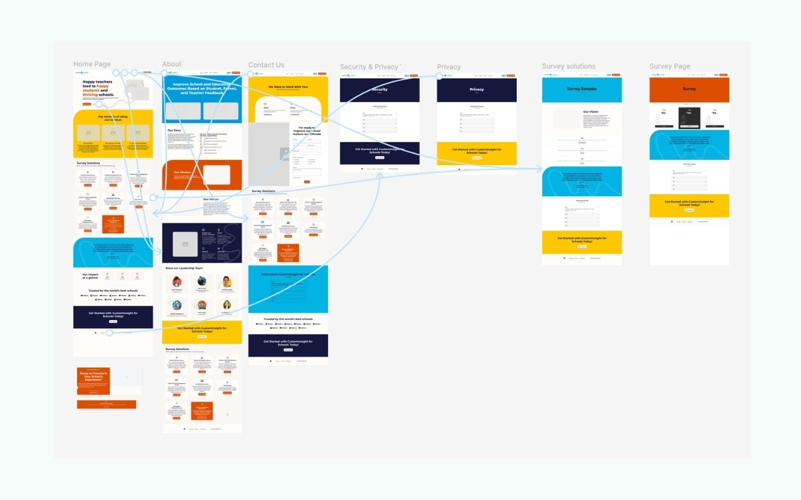
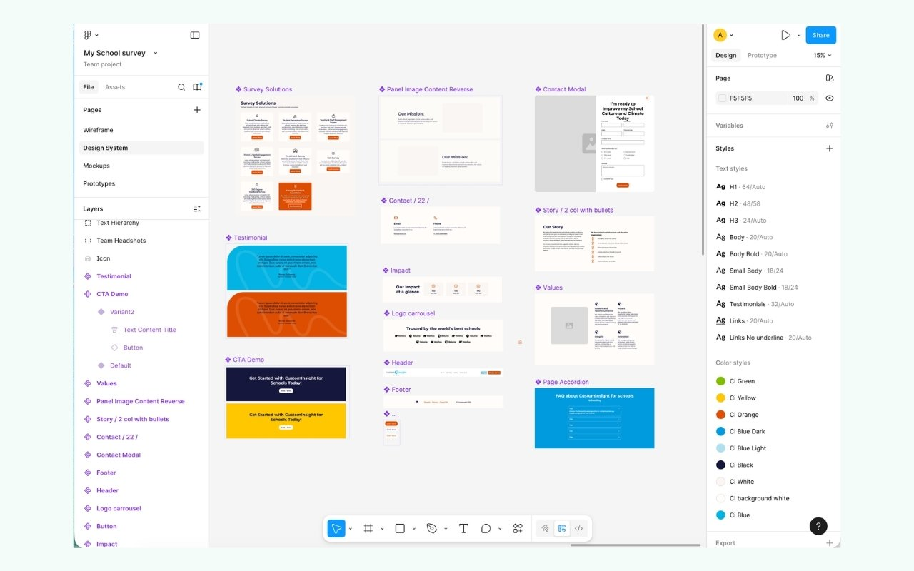

The problem
A service-oriented website with a complex offering, a non-technical audience, and a single most important goal: get schools to reach out. The existing site made it hard for school administrators to understand what the service actually offered and even harder to take the next step. The information architecture buried key offerings, and there were no consistent moments for users to convert. There was no clear path from "I'm interested" to "I want a quote."
My role
I led the full redesign, working closely with the client team through multiple sessions to clarify goals, define target audiences, and align on core messaging before any design work began. The information architecture came first. Then visual design.
Design decisions
The redesign restructured content around how a school administrator actually evaluates a service: What does it do? Who is it for? What does it cost? How do I start? Each page was built to answer those questions in sequence, with consistent call-to-action moments surfaced at every natural decision point.

I translated the strategy into wireframes, high-fidelity mockups, and a reusable Figma component system that could scale across pages and screen sizes without requiring bespoke design work for every new section.

Outcome
The redesigned site gives school administrators a clear picture of the service and a frictionless path to reaching out. The structure now actively supports lead generation rather than working against it. Live at myschoolsurvey.com.